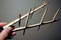
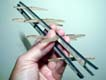
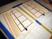

Smooth the plan onto your glass building surface. Layout the left and right sides parallel to and as close together to each other as practical. You may want to put a thin strip of tape down around the edges of the plan to keep it from peeling up.
Note, the photo below shows a left and right half-wing plan, side by side. This is convenient for building the tip and mid panels. Later, you will want a full span center panel with some of the mid panels to jig up the joiner boxes during the center panel build sequence. This is a three piece wing, not a two piece wing!
| Wing Plans |
|---|
{kind=link}
(2) 1/2" x 48" x 0.028" --> 0.007"
Cut one 29.9" (9.05" from each end) for the center panel top spar cap. Split leftover tips lengthwise to get 4, 9.05" long 1/4" wide caps for the tip panels.
Note: the spar material provided in my kit was longer than 50" so I chose to leave them 3/4" long to function as integrated carry through strips. I will refer to this as the "integrated carry through method" later in this document. If this method is used, only one extra carry through strip per tip panel would be required as doublers for the top spar caps. If you choose to persue this option, you will need to thin the insert and web MORE at the break so that the tip cap strips will fit inside the cap strips for the end of the mid panel.
Cut second to 30" (9" from each end) for the center panel bottom spar cap. The remaining material is leftover and may be used for the outer break spar cap carry through segments, each about 1-1/2" long. Two segments are used for the upper cap carry through, one for the bottom cap carry through (3 needed for each tip panel), unless you choose to use the integrated carry through method as described in the note above; in this case, only one carry through doubler is needed for each top cap (1 needed for each tip panel).
(1) 1/2" x 36" x 0.014"
Cut to 29.9" for underside of the top spar cap on center panel. Remaining 6.1" is leftover.
(2) 3/8" x 48" x 0.028" --> 0.007"
Cut one into 4 pieces with lengths of 8.09", 15.91", 15.91", 8.09" (starting from one end). The two 15.91" lengths are for the top spar caps of the mid panels. Use the plan to obtain the correct cut off angle. The two 8.09" lengths are leftover.
Cut the second piece into 3 pieces with 16" lengths. The two ends are for the bottom spar caps of the mid panels. Use the plan to obtain the correct cut off angle. The center length is used for the wing bolt beam.
| Cut Carbon | Carbon on Plan |
|---|
{kind=link}
{kind=link}
Create two angle jigs with a 12 degree face on top and the shortest height corresponding to the height of the insert at the break and wax thoroughly to prevent sticking. The purpose of this piece is to hold the two upper carry through segments at the correct angle while they are laminated together during the spar cure. The lower spar carry through segment can remain flat since it is only .007" thick and won't be laminated. The carry through segments are illustrated in Mark's Panel Build Sequence.
Use a jig to sand the ends of the webs so that they have the correct sweep angle to match the plans. Do a dry fit as you go to make sure the pieces conform to the plan.
Prepare two end-grain basswood inserts (one each for left and right tip panels) to replace the 3/8" portion of the spar web that is closest to the break (number 11) - use a piece of the 1/4 x 3/4 x 18" basswood stick. The face of the insert at the break should be beveled to 6 degrees; you may want to make a 6 degree angle jig to facilitate this. Shorten the web by the same length as your insert. The webs are tapered, so shorten the correct end!
Remove a little material on the tops and bottoms at the dihedral break end of the insert and web where the spar carry through segments go - a swath about .5" long and .014" deep for the upper segments and .5" x .007" for the lower segment.
Note: you'll need to take off more than this if you use the integrated carry through method. An extra .007 on top and bottom in addition to the figures above, should suffice.
| Tip Panel Parts | Tip Panel Dry Fit |
|---|
{kind=link}
{kind=link}
Note: if you choose to use the integrated carry through method, you should shim the very end of the Mylar strip about .007", where you have done the extra thinning for the basswood insert and web. This will raise the lower cap strip enough so that it will bond properly into the inside of the mid panel cap strip.
Butter the bottom spar cap.
Place the lower spar cap carry through segment, half on the buttered spar cap, and half on the Mylar strip. Butter the half of the carry through segment that is on top of the spar cap.
Note: if you are using the integrated carry through method, then omit the doubler in this step, and leave the part of the lower cap strip which extends past the break unbuttered.
Next, butter both ends of the shortened web segment and butt up against the basswood insert.
Place a rib, then a both-ends-buttered web, then a rib, etc.
| Tip Stacked |
|---|
{kind=link}
Note: if you are using the integrated carry through method, then you will only place one carry through segment, half buttered, omitting the second carry through segment referenced above.
Butter the top spar cap strip and place it on top of your assembled spar. Line it up carefully to end on the plane formed by the 6 degree face of your insert. Gently squeeze the cap down into position. Take this opportunity to use a scrap of balsa to wipe the splooge from all corners where the webs and ribs meet. Don't bother with the splooge that comes from the spar caps, you'll trim this off in the morning.
Place two strips of masking tape perpendicular to the spar axis, spaced along the spar length, to create little tents over the spar, sticking the ends to your wax paper. The goal is to prevent the spar cap from shifting when you weigh it all down.
Place a strip of 1/8" thick polyethylene foam over the spar cap.
Place the 12 degree angle jigs, one at each spar end on top of the lower spar cap carry through segment, forcing the two upper carry through segments to bend up at the proper angle. Use a brick to hold the two jigs in place at the end of the spars, if necessary. Use a popsicle-stick to gently press the two upper spar cap carry through segments together to squeeze out any excess epoxy. You may find that the angle jig is lifting part of the carry through segment and spar cap off of the basswood insert. In this case, place a piece of popsicle stick or other suitable scrap just under the polyethylene foam right at the end to hold it down to the insert.
| Tip Curing |
|---|
{kind=link}
|  | Tips, One Splooged, One Cleaned |  | Tips Cleaned & Radiused |
|---|
{kind=link}
{kind=link}
Wet out and blot away excess epoxy.
Note in the photo below, my wrapping was a bit heavy. I ended up with about 7 wraps per inch instead of 6 per inch. If you are careful about spreading the ribbon out flat, you should be able to cover the spar about as densely as the picture, but with fewer turns.
| Ready to Wrap | Tip Wrapping |
|---|
{kind=link}
{kind=link}
Prepare both tip panels and weigh them down with a plate and bricks again.
| Wetted, Blotted, & Ready to Fill | Filler Strip Cure |
|---|
{kind=link}
{kind=link}
Following the plan, trim away a portion of the 1/8" thick part so you end up with a taper, about 11/16" wide at the break point and about 1/2" wide at the tip. Bevel this composite TE strip so that the thicker part is close, but not all the way down to the height of the TE ribs.
Notch the TE strip. To form the notches, create a notching tool by gluing a 3/32" strip of sandpaper on to the edge of a piece of 6 x 1 x 3/32" hard balsa scrap. Sand the 1" face of this tool down until sanding with the 3/32" edge makes notches which form a friction fit with the rib material. Position the notches so that the ribs seat into the strip about 3/32" - you may need to trim off the TE ends of the ribs slightly.
Create and bevel the lower edge of the inner LE strip from 3/32 x 2 x 36" stick. See Mark's Contruction Tips #2 for more details on the inner LE strip installation.
Bevel the LE tip of each rib to match the LE sweep.
Use some of the 1/8 x 2 x 36" balsa to cut out pieces to form the tips according to the wing plan.
| TE Strip, LE Inner Strip, Tip Pieces - Dry Fit |
|---|
{kind=link}
Wipe away excess glue, but create a Titebond fillet at all strip/rib intersections.
| Titebond Fillets |  | Curing Strips & Tips |
|---|
{kind=link}
Use the same epoxy (without thickener) to laminate two 5/16" x 2" strips of 1.5 oz fiberglass onto the face of the tip panel end rib. The strip goes across the spar between the carry through segments and is there to prevent the rib/spar joints from cracking apart. This eliminates the need for the gusset on the outer break end rib shown in the plans.
Note, I call the photo below "glassing the end ribs," (which it is) but it should not be confused with the "glassing the end ribs" in Mark's notes. In his notes, he is refering to glassing the end ribs at the joiner break and the glassing there is along the top and bottom surfaces of the ribs (like fiberglass cap strips along the end rib axes).
| End Ribs in Two Pieces |  | Glassing the End Ribs |
|---|
{kind=link}
Preform the sheeting if desired using Mark's instructions on Preforming D-Tube Sheeting.
Note, in Mark's instructions, he refers to using a metal form for doing the preforming. I found a suitable form in an old stainless steel ice-cream making vessle. But I found I really didn't end up needing it. Here is my modified preforming technique:
- Run the piece of sheeting under the faucet to get both sides wet, but spend most of the time with the water running onto the external (to be convex) side. Flex the sheeting gently to open the pores on this side and encourage more water to soak in on this side. 15 to 30 seconds total under the water is all that is required.
- Now dry the sheeting with a hobby heat gun, spending most the time on the internal (concave) side. Hold the sheet with some curvature at one end while you dry the opposite end pointing the gun away from your fingers. This eliminates the need for hot mits.
- If you find that your sheet is potato-chipping, focus your drying opposite the saddle on the concave side. This will tend to shrink the fibers and remove the saddle.
- If the sheet isn't curved enough, you can repeat the whole procedure. If the potato chipping didn't go away, you can run some water on the convex side on the saddle to lengthen the fibers, and dry on the opposite concave side to shorten the fibers.
|  | Tip Lower Sheet Blanks & LE Shims |
|---|
{kind=link}
The bottom sheeting butts the inside of the front tip outline for the most part. But where the airfoil LE upsweep starts, the bottom sheet overlaps onto the tip outline. This requires trimming kind of a zigzag into the end of the bottom sheeting piece. Mark suggests laying a ruler on the ribs to see how the bottom sheeting wants to intersect with the tip pieces with minimum deformation and then do the joint accordingly. This is not critical, since these joints see little stress. I found that I was able to accommodate the lower sheeting by marking the outline of the tip bay onto my sheeting, then sanding a bevel outside this line. The effect is that the portion of the sheeting that glues onto the tip outline is somewhat thinner than the rest.
| Tip Lower Sheet With Beveled End | Clamping Lower Sheet With Clothespins (Not Recommended) |
|---|
{kind=link}
{kind=link}
Note, in the photo below, I used 3/16" soft balsa fillets which Mark pointed out is overkill. I should have used 1/8" soft balsa fillets here. No doubt this is partially responsible for the slightly overweight finished tip panels. Use 3/16" soft balsa fillets for the mid panels and 1/4" medium balsa for the center panel fillets. See Mark's Wing Structure document for a picture showing the relative size of the balsa fillets to the spars in the various panels.
| Tip Upper Sheet Blanks & Installed Balsa Fillets |
|---|
{kind=link}
| Tip Upper Sheet Preformed With .015" Wedges Removed |  | Tip Upper Sheet Clamping (Correct Method) |
|---|
{kind=link}
Create and bevel the lower edge of the outer LE strip from the 3/32 x 2 x 36" stick. Glue onto the LE with Titebond. Make sure the lower edge is flush with the lower sheeting. Use bits of masking tape to hold in place while curing.
Use a nick and cut method to cut all the pieces for one panel with a light friction fit for each piece.
Glue in and with Titebond and leave slightly above the rib top surface. Sight down the panel and adjust so that the support strips make a straight line, then push them down flush with the ribs using a straight edge.
Fillet support strip/rib intersections with Titebond.
| Two Finished Tip Panels | Final Weight For Two: 24.5 grams (a tad heavy) |
|---|
{kind=link}
{kind=link}